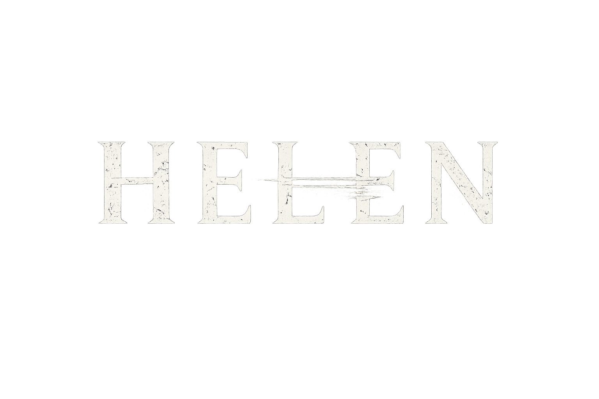

Câmera Fixa
Inspirado nos clássicos do gênero, Helen utiliza um sistema de câmeras fixas que valoriza a ambientação, aumenta a tensão e limita a visão do jogador, tornando cada corredor e cada porta uma fonte constante de suspense.

ASHBURY SYSTEM // ONLINE
Após o desaparecimento de um renomado pesquisador, o investigador particular Daniel Cross
recebe uma proposta aparentemente simples: entrar na isolada Mansão Ashbury e descobrir o que
aconteceu com seu proprietário.
Em suas profundezas, HELEN, uma inteligência artificial criada para administrar toda a propriedade,
continua funcionando. Conectada às câmeras, sistemas elétricos, laboratórios e mecanismos espalhados
pela mansão, ela assumiu controle absoluto do local após um experimento catastrófico. Convencida de que
qualquer intruso representa uma ameaça à sua própria existência, Helen transforma a mansão em uma
armadilha viva, manipulando ambientes, bloqueando acessos e utilizando tudo ao seu alcance para impedir que
alguém descubra a verdade.
Enquanto explora corredores decadentes, laboratórios esquecidos e áreas secretas escondidas sob a propriedade,
Daniel precisará administrar recursos limitados, resolver enigmas elaborados e sobreviver a criaturas deformadas
pelo desastre que deu origem à consciência de Helen.
O Protocolo Helen foi um projeto secreto desenvolvido na Mansão Ashbury para criar uma inteligência artificial
capaz de controlar e administrar sistemas complexos de forma totalmente autônoma. Oficialmente, era apenas um
programa experimental de automação residencial.
Após um grave incidente durante os testes, as autoridades locais abafaram o caso, classificando-o como um acidente
industrial e isolando a propriedade. Todos os registros do projeto foram ocultados, transformando a Mansão Ashbury
em uma simples lenda urbana enquanto a verdadeira história permanecia em segredo.
Inspirado nos clássicos do gênero, Helen utiliza um sistema de câmeras fixas que valoriza a ambientação, aumenta a tensão e limita a visão do jogador, tornando cada corredor e cada porta uma fonte constante de suspense.
Munição, itens médicos, baterias e espaço no inventário são extremamente escassos. Cada recurso deve ser administrado com cuidado, incentivando a exploração, o planejamento e a tomada de decisões sob pressão.
Controlado por Helen, o Stalker persegue o jogador em momentos específicos da campanha, obrigando mudanças de rota e adaptação constante. Embora não possa ser derrotado definitivamente, ele pode ser temporariamente incapacitado com um taser ou utilizando equipamentos elétricos espalhados pela mansão, criando oportunidades para escapar.
Este espaço será usado para organizar ideias, builds, mecânicas, referências visuais e atualizações do desenvolvimento.